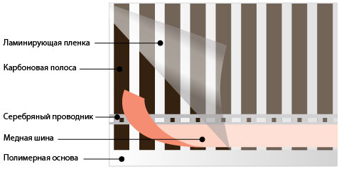

Модели и цены
Цена по запросу
Позиции нет в прайсе от 27.10.2026; цену уточняйте перед заказом.
Инфракрасная пленка Lavita LH
Производитель: Lavita (Южная Корея)
Инфракрасная пленка Lavita представляет собой греющие карбоновые полосы соединенные медно-серебряной шиной и покрытые с обоих сторон пленкой из высокотемпературного полиэстера.Конструкция плёнки Lavita LH


Технические xарактеристики
| Напряжение | 220 В / 50 Гц |
| Средняя потребляемая мощность | 60-80 Вт/кв.м |
| Толщина пленки | 0,338 мм |
| Максимальная температура нагрева | +60 °С |
| Температура плавления пленки | +130 °С |
| Длина волны инфракрасных лучей | 9,4 мкм |
Области применения плёнки Lavita LH
Пленочный теплый пол Lavita используется для основного и дополнительного обогрева жилых, офисных, складских, бытовых и общественных помещений. Возможен обогрев зимних садов, теплиц и оранжерей. Греющая пленка Lavita может укладываться под любые напольные покрытия: паркет, ламинат, линолеум, ковролин, кафель и т.д. Также пленку можно укладывать на стены, потолок, под ГВЛ, ГКЛ и прочие панели.
Под паркет, ламинат, ковролин, линолеум
Инфракрасная плёнка LH-303 шириной 30 см и LH-308 шириной 80 см поставляется только целыми рулонами под заказ с транзитного склада. Звоните: 8 (800) 333-35-43.
Монтаж и безопасность
- Перед установкой теплого пола Lavita нарисуйте план укладки.
- Подготовьте все необходимые материалы.
- Подготовьте поверхность для укладки.
- Уложите теплоотражающую подложку.
- Рассчитайте количество и длины полос с учетом размеров пленки и ее максимально допустимой длины для подключения.
- Разрежьте термопленку Lavita на полосы нужного вам размера.
- Уложите полосы термопленки на теплоизоляцию.
- Изолируйте битумным скотчем линии отреза медной шины и серебрянные контакты.
- Установите терморегулятор.
- Установите датчик температуры.
- Соедините термопленку Lavita с монтажными проводами.
- Изолируйте электрические клеммы с двух сторон при помощи битумного скотча.
- Подключите соединительные провода к термореrупятору.
- Подключите к терморегулятору датчик пола.
- Подключите терморегулятор к электрической сети.
- Протестируйте систему обогрева.
- По желанию вы можете постели полиэтиленовую пленку.
- Уложите финишное напольное покрытие.
- Включите теплый пол Lavita.
Скачать подробную инструкцию по установке и эксплуатации инфракрасного тёплого пола Lavita.
- Греющая пленка Lavita не должна соприкасаться с имеющимися силовыми проводами, осветительной арматурой, водопроводными и отопительными трубами, кабелями и другими элементами инженерной системы помещения. В таких случаях необходимо предусматривать минимальное расстояние от греющей пленки - 20 мм.
- Расстояние греющей плёнки Lavita от стен должно составлять не менее 10 см и не более 40 см.
- Запрещается разрезать греющую пленку Lavita не по линии разреза.
- Не допускайте пересечение полос греющей пленки между собой во избежание перегрева и выхода из строя теплого пола.
- Категорически запрещается, даже кратковременно, подсоединять к сети греющую пленку Lavita, свернутую в рулон.
- Запрещается выполнять работы по подключению элементов теплого пола, не отключив напряжение питания.
- Запрещается производить подключение системы теплого пола Lavita без УЗО. Максимальный ток срабатывания УЗО должен быть не более 30 мА.
- Запрещается подключать греющую nленку Lavita к сети с неизолированными концевыми и соединительными контактами.
- Запрещается подвергать греющую пленку Lavita нагрузкам, влекущим за собой механические повреждения пленки, нарушение целостности конструкции и т.п. Не допускайте падение острых предметов на nленку, старайтесь в процессе монтажа не ходить по расстеленным полосам пленки. Не наступайте на свернутую в рулон пленку во избежание механических повреждений и появления изломов.
- Запрещается крепить греющую пленку Lavita с помощью гвоздей, дюбелей или других крепежных элементов, вызывающих повреждение поверхности пленки.
- Запрещается укладка греющей nленки Lavita в плиточный клей и в стяжку. Теплый пол на основе греющей пленки рекомендуется устанавливать при производстве «сухих» строительных работ.
- В процессе эксплуатации запрещается покрывать часть пола, под которым установлена система теплого пола Lavita, теплоизолирующими материалами (ковры, одеяла, мебель без ножек и пр.).
- Работы по подключению системы теплого пола Lavita к электрической сети должны производиться только квалифицированным электриком. Подключение должно производиться стационарно, в соответствии с правилами ПУЭ, СНиП и ВП КСО.
- Запрещается устанавливать терморегулятор на значения нагрева пола более 30 °C
- В случае затопления теплого пола или другого прямого контакта с водой, необходимо выключить теплый пол и просушить поверхность. Не используйте теплый пол для просушивания влажной поверхности.
- Монтаж не рекомендуется производить при отрицательной температуре, при повышенной влажности. Угол сгиба плёнки не должен превышать 90 градусов.
Гарантийный срок — 15 лет с даты продажи.
Гарантийные обязательства
Если в течение гарантийного периода в купленном у продавца изделии появляется дефект по причине его несовершенной конструкции, нарушения технологий изготовления или некачественных материалов, продавец гарантирует выполнение бесплатного гарантийного ремонта дефектного изделия (или его части) при соблюдении покупателем рекомендаций и требований, изложенных в инструкции по установке и эксплуатации инфракрасного пленочного пола.
Принцип работы инфракрасного тёплого пола
Обогрев происходит за счет инфракрасного излучения с длиной волны 5 - 20 мкм. Инфракрасное излучение поглощается окружающими предметами, которые в свою очередь начинают отдавать полученное тепло воздуху.
Такой вид обогрева имеет ряд преимуществ по сравнению с конвекционными (электрические и водяные конвекторы) и комбинированными (радиаторы отопления) системами. За счет распространения тепловой энергии снизу вверх — от пола к стенам и потолку — происходит значительная экономия электроэнергии. Верхняя (предпотолочная) область при этом нагревается в последнюю очередь и имеет меньшую температуру.
Датчик температуры устанавливается на высоте 1,5 метров, соответственно зона комфортной температуры находится в нижней части помещения, где собственно и находится человек.
Документы перенесены из прежнего каталога. Перед использованием проверяйте срок их действия.